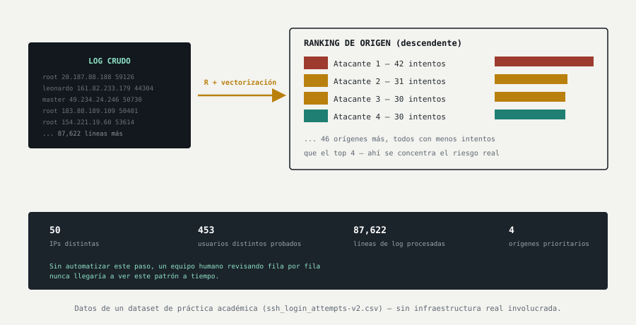

El ejercicio
Un servidor recibe miles de golpes a la puerta cada día
Cualquier servidor conectado a Internet con acceso remoto habilitado (SSH) recibe, de forma constante, intentos automatizados de acceso: programas que prueban nombres de usuario y contraseñas comunes, sin descanso, con la esperanza de que alguno funcione.
El problema no es detectar un intento aislado —eso es normal y constante—, sino distinguir, entre decenas de miles de líneas de texto, cuáles de esos orígenes representan una amenaza real que merece bloquearse ya.
Hallazgo 1 — El volumen por sí solo no dice nada
87.622 líneas de texto no son información, son ruido
El archivo de registro contenía 87.622 intentos de acceso individuales. Leído línea por línea, ese volumen es inmanejable para cualquier persona: nadie puede revisar manualmente un archivo de ese tamaño y sacar una conclusión útil antes de que sea demasiado tarde.
Automatizando el conteo, se redujo ese volumen a dos cifras claras: 50 direcciones de origen distintas y 453 nombres de usuario diferentes fueron probados contra el servidor.
Por qué importa para la empresa
Sin este paso de reducción, un equipo de sistemas se enfrenta a un archivo de texto gigante en el que es imposible distinguir una campaña de ataque real de tráfico de fondo normal. La decisión de qué bloquear se termina tomando a ciegas, o no se toma.
Cómo se aplica
Este tipo de reducción —de registros crudos a cifras entendibles— debería ejecutarse de forma automática y periódica (a diario o en tiempo real), no como un ejercicio puntual cuando ya ocurrió un incidente.
Hallazgo 2 — Un ranking cambia por completo la prioridad
No las 50 direcciones importan igual — 4 concentran el riesgo
Al ordenar los 50 orígenes de mayor a menor número de intentos, apareció un patrón claro: unos pocos orígenes concentraban muchos más intentos que el resto (hasta 42 intentos el más activo), mientras la mayoría apenas aparecía una o dos veces.

Por qué importa para la empresa
Tratar los 50 orígenes por igual desperdicia tiempo y atención del equipo de seguridad. El verdadero riesgo casi siempre se concentra en un puñado de orígenes muy persistentes —identificarlos rápido es la diferencia entre una respuesta a tiempo y una reacción tardía.
Cómo se aplica
Usar este ranking para automatizar el bloqueo de los orígenes que superen un umbral de intentos, en vez de depender de que alguien lo revise manualmente y decida caso por caso.
Hallazgo 3 — Los nombres de usuario probados cuentan la estrategia
Se probaron 453 nombres de usuario — muchos, previsibles
Entre los nombres de usuario probados aparecían, junto a nombres al azar, cuentas genéricas y predecibles como “root” (la cuenta con más privilegios en un sistema) y otras cuentas de servicio habituales. Esto revela que buena parte del ataque no busca adivinar una identidad concreta, sino explotar la existencia de cuentas genéricas que casi todos los servidores tienen por defecto.
Por qué importa para la empresa
Si la cuenta con más poder del sistema (“root”) sigue siendo accesible por contraseña desde fuera, cada uno de esos 453 intentos es, literalmente, un intento de tomar control total del servidor —no solo de una cuenta cualquiera.
Cómo se aplica
Deshabilitar el acceso remoto directo con la cuenta de máximo privilegio, exigir claves criptográficas en vez de contraseñas para el acceso remoto, y dar de baja o renombrar cuentas de servicio genéricas que no se usan.
Hallazgo 4 — Lo que lo hace útil de verdad es que no depende de una persona
El mismo proceso que tardó segundos en un archivo de práctica funciona igual en uno mil veces más grande
El procesamiento de este archivo se construyó con técnicas de programación vectorizada: en vez de revisar el registro fila por fila con un bucle lento, el análisis completo (conteo, filtrado y ranking) se ejecuta sobre el bloque entero de datos de una sola vez. Esto es lo que permite que la misma lógica funcione igual de rápido sobre un archivo de una empresa real, con millones de líneas, en vez de miles.
Por qué importa para la empresa
Un análisis que solo funciona “a mano” o de forma puntual no sirve como vigilancia real: para cuando alguien termine de revisarlo, el ataque ya pasó. Solo un proceso automatizado y repetible convierte esto en monitorización de verdad, no en una auditoría aislada.
Cómo se aplica
Integrar este tipo de análisis en la herramienta de monitorización que ya use la empresa (un SIEM, por ejemplo), para que el ranking de amenazas se genere solo, de forma continua, en lugar de depender de que alguien lo ejecute manualmente cuando se acuerda.
En resumen
Los datos ya existen — la pregunta es si alguien los está mirando
Todos los servidores con acceso remoto habilitado generan este tipo de registro constantemente. La diferencia entre una empresa que detecta un ataque a tiempo y una que se entera por un incidente no está en si el registro existe —siempre existe—, sino en si alguien, o algo automatizado, lo está convirtiendo en información accionable antes de que sea demasiado tarde.
87.622 intentos procesados · 50 orígenes identificados y priorizados · 453 nombres de usuario analizados